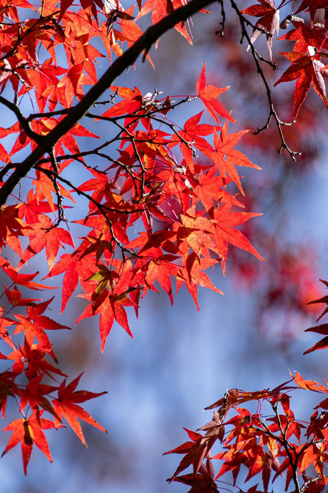
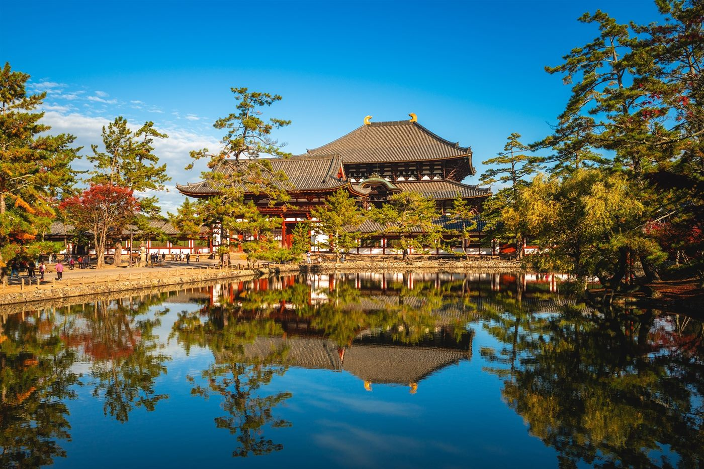
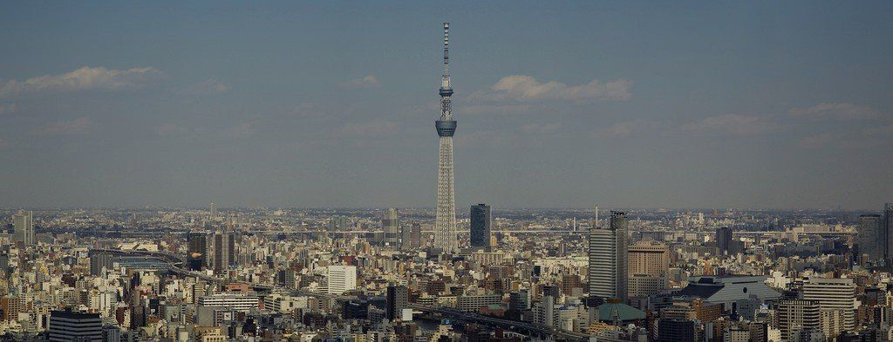
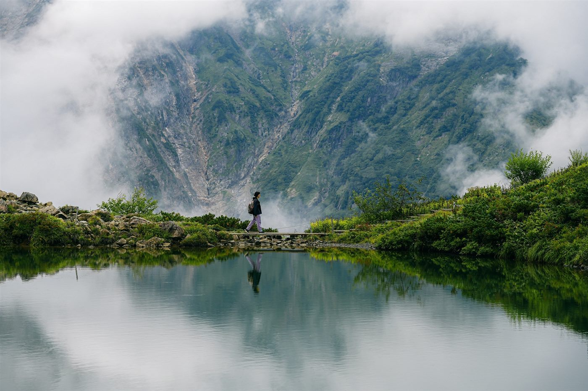

1 день · Киото
Прибытие в аэропорт Кансай, индивидуальный трансфер в отель в Киото и свободное время. При заселении гости получают билеты на синкансэн по маршруту Киото - Токио.
- Отель
- Kyoto Tokyu Hotel 4*
- Питание
- без питания
Маршрут соединяет спокойную традиционную Японию в Киото, Наре и Нагано с динамичным Токио. Тур проходит в сезон кленов: сады, храмовые кварталы, старые улицы и горные пейзажи выглядят особенно выразительно.
Главный акцент поездки - небольшая группа до 8 человек и редкий культурный опыт в Нагано: знакомство с сува-дайко, выступление на исторической деревенской сцене, рёкан, горячие источники и ужин кайсэки.

Прибытие в аэропорт Кансай, индивидуальный трансфер в отель в Киото и свободное время. При заселении гости получают билеты на синкансэн по маршруту Киото - Токио.
Экскурсия по Киото с русскоязычным гидом: святилище Фусими Инари, замок Нидзё, храм Нандзэндзи и вечерняя атмосфера старого квартала Гион.
Поездка в Нару: храм Большого Будды, парк с ручными оленями, храм Касуга и традиционный сад Исуйэн. Возвращение в Киото на поезде.

Свободный день в Киото. Можно оставить день для прогулок, сувениров и ресторанов или добавить Арасияму, Удзи, Осаку, Кобе и другие точки рядом с городом.
Переезд из Киото в Токио на синкансэне. Экскурсия по Токио: Мэйдзи Дзингу, Сибуя, Асакуса, Сэнсодзи, Синдзюку и вечернее ниндзя-кабуки шоу.

Свободный день в Токио. В сезон кленов особенно уместны Никко, Камакура, гора Такао или традиционные сады Коисикава Коракуэн, Хамарикю и Синдзюку Гёэн.
Переезд в традиционную деревню в префектуре Нагано. Культурная программа сува-дайко: история, репетиция и выступление на старинной сцене. Вечером - рёкан, кайсэки и горячие источники.

Возвращение из Нагано в Токио с гидом на общественном транспорте, заселение в отель и свободное время для прогулок, покупок или короткой поездки за город.
Завтрак, выписка из отеля и маршрутный трансфер в аэропорт. По желанию обратный трансфер можно заменить на приватный за дополнительную плату.
Тур подойдет тем, кто хочет совместить осенние пейзажи, храмы, традиционные районы и современный Токио без большой группы. Программа сбалансирована: есть экскурсионные дни, свободное время и отдельный выезд в Нагано ради опыта, который редко попадает в стандартные маршруты.